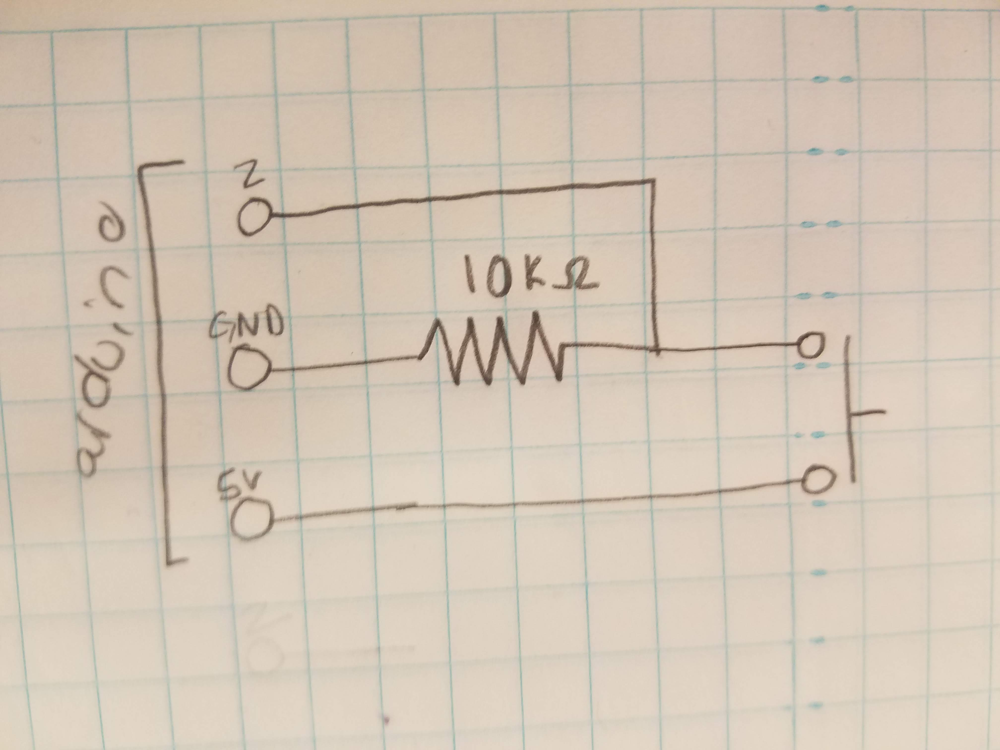

Sam's Assignment 6!
Schematic

This schematic shows the manner in which the button is connected to the arduino power and ground as well as pin 2 to read the change in current through the circuit. The current without the 10K ohm resistor when the button is pressed power would be connected directly to ground and current would be drawn till the wires melted or the arduino broke. Right now with the arduino supplying 5V and the 10K ohm resistor I can calculate the current flowing when the button is pressed as 5V/10K Ohms = .5mA.
Circuit
When the button is not pressed, current does not flow past the wire connected to pin 2 and it reads 0. When it is pressed, current flows and pin 2 reads 1.
Arduino Code Snippet
The following code prints the reading from pin 2 to the serial monitor.
//runs once
void setup() {
//starts the serial monitor
Serial.begin(9600);
}
//runs repeatedly
void loop() {
// creates a variable integer called button for the input that goes into pin 2 from the button
int button = digitalRead(2);
//prints the input from the button that fgoes into pin 2 (this will be either a 1 if pressed or a 0)
Serial.println(button);
//wait 50ms so the monitor can print and the button can reset
delay(50);
}
JavaScript Code Snippet
Arduino Code Snippet
This project uses p5.js to create an interactive webpage that takes the serial output from the arduino and is coded in javascript to display a message about the button state based on that output.
var serial; // variable to hold an instance of the serialport library
var portName = 'COM4' //rename to the name of your port
var datain; //some data coming in over serial!
var xPos = 0;
function setup() {
serial = new p5.SerialPort(); // make a new instance of the serialport library
serial.on('list', printList); // set a callback function for the serialport list event
serial.on('connected', serverConnected); // callback for connecting to the server
serial.on('open', portOpen); // callback for the port opening
serial.on('data', serialEvent); // callback for when new data arrives
serial.on('error', serialError); // callback for errors
serial.on('close', portClose); // callback for the port closing
serial.list(); // list the serial ports
serial.open(portName); // open a serial port
createCanvas(1200, 800);
background(0x08, 0x16, 0x40);
}
// get the list of ports:
function printList(portList) {
// portList is an array of serial port names
for (var i = 0; i < portList.length; i++) {
// Display the list the console:
print(i + " " + portList[i]);
}
}
function serverConnected() {
print('connected to server.');
}
function portOpen() {
print('the serial port opened.')
}
function serialError(err) {
print('Something went wrong with the serial port. ' + err);
}
function portClose() {
print('The serial port closed.');
}
function serialEvent() {
if (serial.available()) {
datain = Number(serial.readLine());
//console.log(datain);
}
}
function graphData(newData) {
// map the range of the input to the window height:
var yPos = map(newData, 0, 255, 0, height);
// draw the line in a pretty color:
stroke(255, 0, 80);
line(xPos, height, xPos, height - yPos);
// at the edge of the screen, go back to the beginning:
if (xPos >= width) {
xPos = 0;
// clear the screen by resetting the background:
background(0x08, 0x16, 0x40);
} else {
// increment the horizontal position for the next reading:
xPos++;
}
}
function draw() {
background(0);
fill(255);
if (datain == 0) {
text("button pressed: NO", 30,30);
} else {
text("button pressed: YES", 30,30);
}
}
Project Operation